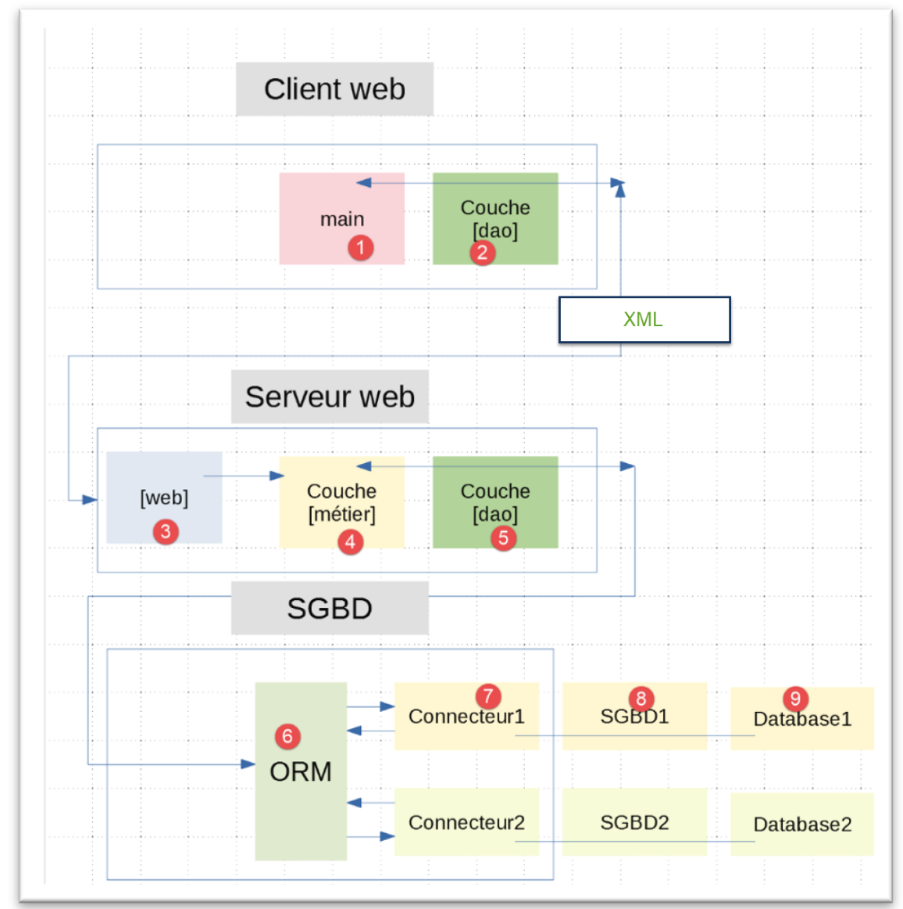
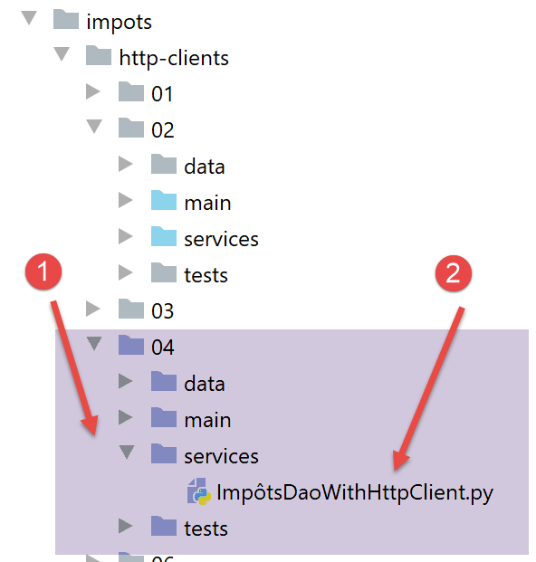

27. تمرين تطبيقي: الإصدار 9
نعود إلى الإصدار 7 من التمرين التطبيقي، وبدلاً من أن يتبادل العميل وخادم الويب سلاسل jSON، سيتبادلان هنا سلاسل XML.
تظل البنية كما هي:

27.1. خادم الويب

يتم الحصول على المجلد [http-servers/04] عن طريق نسخ المجلد [http-servers/02] باستثناء المجلد الفرعي [utilities]. ثم يتم تغيير العناصر التالية:

يتم تعديل الملف [config] على النحو التالي:
# التبعيات المطلقة
absolute_dependencies = [
# مجلدات المشروع
# BaseEntity، MyException
f"{root_dir}/classes/02/entities",
# InterfaceImpôtsDao، InterfaceImpôtsMétier، InterfaceImpôtsUi
f"{root_dir}/impots/v04/interfaces",
# AbstractImpôtsdao، ImpôtsConsole, ImpôtsMétier
f"{root_dir}/impots/v04/services",
# ImpotsDaoWithAdminDataInDatabase
f"{root_dir}/impots/v05/services",
# AdminData، ImpôtsError، TaxPayer
f"{root_dir}/impots/v04/entities",
# الثوابت، الشرائح
f"{root_dir}/impots/v05/entities",
# index_controller
f"{root_dir}/impots/http-servers/01/controllers",
# نصوص برمجية [config_database, config_layers]
script_dir,
# مسجل، SendAdminMail
f"{root_dir}/impots/http-servers/02/utilities",
]
- السطر 21: نحدد المجلد الخاص بالأدوات المساعدة التي بقيت في [http-servers/02]؛
يتغير البرنامج النصي الرئيسي [main] على النحو التالي:
# الصفحة الرئيسية URL
@app.route('/', methods=['GET'])
@auth.login_required
def index():
logger = None
try:
# مسجل
logger = Logger(config["logsFilename"])
# يتم تخزينه في ملف تكوين مرتبط بالخيط
thread_config = {"logger": logger}
thread_name = threading.current_thread().name
config[thread_name] = {"config": thread_config}
# يتم تسجيل الطلب
logger.write(f"[index] requête : {request}\n")
…
# يتم تنفيذ الطلب بواسطة وحدة تحكم
résultat, status_code = index_controller.execute(request, config)
# هل حدث خطأ فادح؟
…
# يتم تسجيل الرد
logger.write(f"[index] {résultat}\n")
# يتم إرسال الرد
return xml_response(résultat, status_code)
except BaseException as erreur:
# يتم تسجيل الخطأ في السجل إن أمكن
if logger:
logger.write(f"[index] {erreur}")
# يتم إعداد الرد للعميل
résultat = {"réponse": {"erreurs": [f"{erreur}"]}}
# إرسال الرد
return xml_response(résultat, status.HTTP_500_INTERNAL_SERVER_ERROR)
finally:
# يتم إغلاق ملف السجلات إذا كان مفتوحًا
if logger:
logger.close()
- التعديل الوحيد هو في السطر 23: يتم الآن إرسال استجابة XML؛
يتم تعريف الدالة [xml_response] في الوحدة النمطية [myutils]:
import xmltodict
…
def xml_response(résultat: dict, status_code: int) -> tuple:
# النتيجة: القاموس الذي سيتم تحويله إلى سلسلة XML
xmlString = xmltodict.unparse(résultat)
# يتم إرسال الرد HTTP
response = make_response(xmlString)
response.headers['Content-Type'] = 'application/xml; charset=utf-8'
return response, status_code
- السطر 3: تتلقى الدالة [xml_response] كمعلمات:
- القاموس [résultat] لتحويله إلى XML؛
- رمز الحالة [status_code] الذي سيتم إرساله إلى عميل الويب؛
- السطر 5: يتم استخدام المكتبة [xmltodict] لإنتاج السلسلة XML؛
- السطر 8: يتم استخدام الرأس [Content-Type] لإعلام العميل بأننا نرسل له XML؛
يجب استيراد الدالة [xml_response] إلى البرنامج النصي [__init__.py]:
from .myutils import set_syspath, json_response, decode_flask_session, xml_response
ثم يجب دمج الوحدة النمطية [myutils] في الوحدات النمطية ذات النطاق الآلي. ويتم ذلك في محطة طرفية PyCharm باستخدام الأمر [pip install .] (الموجود في مجلد packages).
27.2. عميل الويب
27.2.1. الرمز

تم إنشاء الملف [http-clients/04] عن طريق نسخ الملف [http-clients/02]. ثم نقوم بتعديل الفئة [ImpôtsDaoWithHttpClient] على النحو التالي:
# عمليات الاستيراد
import requests
import xmltodict
from flask_api import status
from AbstractImpôtsDao import AbstractImpôtsDao
from AdminData import AdminData
from ImpôtsError import ImpôtsError
from InterfaceImpôtsMétier import InterfaceImpôtsMétier
from TaxPayer import TaxPayer
class ImpôtsDaoWithHttpClient(AbstractImpôtsDao, InterfaceImpôtsMétier):
# المنشئ
def __init__(self, config: dict):
…
# طريقة غير مستخدمة
def get_admindata(self) -> AdminData:
pass
# حساب الضريبة
def calculate_tax(self, taxpayer: TaxPayer, admindata: AdminData = None):
….
# رمز حالة الرد HTTP
status_code = response.status_code
# يتم إدراج الرد XML في قاموس
résultat = xmltodict.parse(response.text[39:])
# خطأ إذا كان رمز الحالة مختلفًا عن 200 OK
….
- السطر 30: أصبحت استجابة خادم الويب HTTP [response] عبارة عن سلسلة XML. توضح سجلات التشغيل طبيعة هذه السلسلة:
2020-07-27 15:53:47.886283, Thread-2 : <?xml version="1.0" encoding="utf-8"?>
<réponse><result><marié>non</marié><enfants>2</enfants><salaire>100000</salaire><impôt>19884</impôt><surcôte>4480</surcôte><taux>0.41</taux><décôte>0</décôte><réduction>0</réduction></result></réponse>
تتكون السلسلة [<?xml version="1.0" encoding="utf-8"?>] من 38 حرفًا. علاوة على ذلك، إذا نظرنا إلى ملف السجلات باستخدام محرر سداسي عشري، نلاحظ أن خلف هذه السلسلة يوجد حرف انتقال إلى سطر جديد \n. ثم تأتي الإجابة <réponse>…</réponse>. وبالتالي، فإن السلسلة XML التي يتعين علينا تحويلها تبدأ بعد الأحرف الـ39 الأولى من السلسلة XML. وهي تبدأ من الحرف رقم 39، حيث يُرقّم الحرف الأول برقم 0. يتم الحصول على هذه السلسلة من خلال التعبير [résultat["réponse"]].
إذا قمنا بتشغيل العميل (اتبع الإجراء الموضح في الأمثلة السابقة)، فسنحصل على نفس النتائج في الملف [résultats.json] كما في الإصدارات السابقة. أما سجلات التشغيل فهي كما يلي:
2020-07-27 16:21:14.015941, Thread-1 : début du thread [Thread-1] avec 2 contribuable(s)
2020-07-27 16:21:14.016940, Thread-1 : début du calcul de l'impôt de {"id": 1, "marié": "oui", "enfants": 2, "salaire": 55555}
2020-07-27 16:21:14.016940, Thread-2 : début du thread [Thread-2] avec 3 contribuable(s)
2020-07-27 16:21:14.018939, Thread-2 : début du calcul de l'impôt de {"id": 3, "marié": "oui", "enfants": 3, "salaire": 50000}
2020-07-27 16:21:14.019979, Thread-3 : début du thread [Thread-3] avec 3 contribuable(s)
2020-07-27 16:21:14.019979, Thread-3 : début du calcul de l'impôt de {"id": 6, "marié": "oui", "enfants": 3, "salaire": 100000}
2020-07-27 16:21:14.021938, Thread-4 : début du thread [Thread-4] avec 2 contribuable(s)
2020-07-27 16:21:14.021938, Thread-4 : début du calcul de l'impôt de {"id": 9, "marié": "oui", "enfants": 2, "salaire": 30000}
2020-07-27 16:21:14.021938, Thread-5 : début du thread [Thread-5] avec 1 contribuable(s)
2020-07-27 16:21:14.022939, Thread-5 : début du calcul de l'impôt de {"id": 11, "marié": "oui", "enfants": 3, "salaire": 200000}
2020-07-27 16:21:14.031942, Thread-1 : <?xml version="1.0" encoding="utf-8"?>
<réponse><result><marié>oui</marié><enfants>2</enfants><salaire>55555</salaire><impôt>2814</impôt><surcôte>0</surcôte><taux>0.14</taux><décôte>0</décôte><réduction>0</réduction></result></réponse>
2020-07-27 16:21:14.031942, Thread-1 : fin du calcul de l'impôt de {"id": 1, "marié": "oui", "enfants": 2, "salaire": 55555, "impôt": 2814, "surcôte": 0, "taux": 0.14, "décôte": 0, "réduction": 0}
2020-07-27 16:21:14.031942, Thread-1 : début du calcul de l'impôt de {"id": 2, "marié": "oui", "enfants": 2, "salaire": 50000}
2020-07-27 16:21:14.034941, Thread-4 : <?xml version="1.0" encoding="utf-8"?>
<réponse><result><marié>oui</marié><enfants>2</enfants><salaire>30000</salaire><impôt>0</impôt><surcôte>0</surcôte><taux>0.0</taux><décôte>0</décôte><réduction>0</réduction></result></réponse>
…
2020-07-27 16:21:17.055931, Thread-3 : fin du thread [Thread-3]
2020-07-27 16:21:17.059930, Thread-2 : <?xml version="1.0" encoding="utf-8"?>
<réponse><result><marié>non</marié><enfants>3</enfants><salaire>100000</salaire><impôt>16782</impôt><surcôte>7176</surcôte><taux>0.41</taux><décôte>0</décôte><réduction>0</réduction></result></réponse>
2020-07-27 16:21:17.060971, Thread-2 : fin du calcul de l'impôt de {"id": 5, "marié": "non", "enfants": 3, "salaire": 100000, "impôt": 16782, "surcôte": 7176, "taux": 0.41, "décôte": 0, "réduction": 0}
2020-07-27 16:21:17.060971, Thread-2 : fin du thread [Thread-2]
أما على جانب الخادم، فإن سجلات التشغيل هي كما يلي:
2020-07-27 16:32:04.983020, Thread-46 : [index] requête : <Request 'http://127.0.0.1:5000/?marié=oui&enfants=2&salaire=50000' [GET]>
2020-07-27 16:32:04.983020, Thread-46 : [index] mis en pause du thread pendant 1 seconde(s)
2020-07-27 16:32:04.984021, Thread-47 : [index] requête : <Request 'http://127.0.0.1:5000/?متزوج=نعم&أطفال=2&الراتب=55555' [GET]>
2020-07-27 16:32:04.984021, Thread-47 : [index] mis en pause du thread pendant 1 seconde(s)
…
2020-07-27 16:32:07.001271, Thread-56 : [index] mis en pause du thread pendant 1 seconde(s)
2020-07-27 16:32:07.003078, Thread-54 : [index] {'réponse': {'result': {'marié': 'oui', 'enfants': 5, 'salaire': 100000, 'impôt': 4230, 'surcôte': 0, 'taux': 0.14, 'décôte': 0, 'réduction': 0}}}
2020-07-27 16:32:07.006078, Thread-55 : [index] {'réponse': {'result': {'marié': 'oui', 'enfants': 3, 'salaire': 200000, 'impôt': 42842, 'surcôte': 17283, 'taux': 0.41, 'décôte': 0, 'réduction': 0}}}
2020-07-27 16:32:08.002824, Thread-56 : [index] {'réponse': {'result': {'marié': 'non', 'enfants': 2, 'salaire': 100000, 'impôt': 19884, 'surcôte': 4480, 'taux': 0.41, 'décôte': 0, 'réduction': 0}}}
- يستمر مسجل السجلات في كتابة قاموس الاستجابة وليس السلسلة XML التي يتم إرسالها إلى العميل. هذا ليس خطأً بل هو أمر مقصود؛
27.2.2. اختبار طبقة [dao] الخاصة بالعميل

فئة الاختبار [TestHttpClientDao] هي نفسها الموجودة في |الإصدار 7| وتعطي النتائج نفسها.